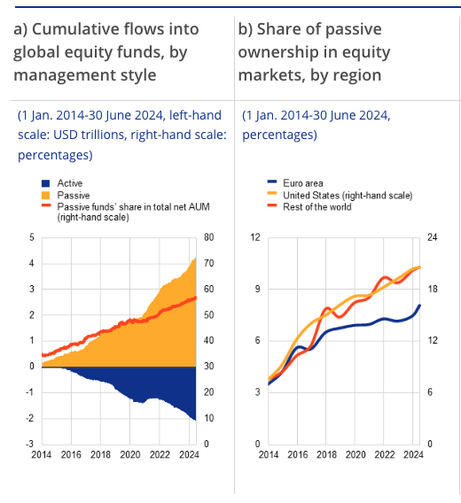

Trading apps
Robinhood, eToro, IBKR retail. Well-served — arguably over-served.
There is a better business model possible in passive investing — for the saver who has drifted into a concentrated bet they did not consciously choose, and for the broker whose execution margins have gone to zero. Both problems point at the same primitive.
Passive investing has been the dominant story in retail for a decade. Volumes have grown, cost compression has gone deep, and Sparplan-style saving is now the default retail mode in continental Europe. Two structural problems have built up alongside the story, one for the saver and one for the broker, and the same trend produces both.
MSCI World, marketed and held as the global equity default, is 71.9% United States. Inside that US slice, the top ten S&P 500 names account for 40.7% of the index, up from a stable ~19% across 1990–2015. A product the saver bought because it was "passive" and "diversified" is now closer to a single-country, momentum-tilted bet on ten names. The tooling that addresses this directly — direct indexing — exists, and is rationed behind wealth-management minimums.
Volumes grew; per-unit margin collapsed. The industry response has mostly been to push back upmarket — PE wrappers, private credit, structured advisory tiers, ETF wrappers around active or thematic strategies priced closer to the mutual funds they replaced than to the broad-market ETFs they sit beside. These products monetise well per customer but fit a narrow customer base. The alternative response sits inside the saving behaviour itself.
Both problems point at the same primitive. Call it Open Indexing: the retail form factor of direct indexing, savings-native, no advisory wrap. A 25-name weekly basket mandate generates roughly an order of magnitude more fills per user per year than the same money in a single ETF — without changing the customer's decision-making at all.
The standard recommendation for any retail saver — to hold a broad, low-cost equity ETF and leave it alone — is correct on average. It also conceals what the benchmark inside the wrapper has become.
Cap-weighting is a rule applied to a benchmark that presents as static. A rule that has performed well over a long up-cycle is not therefore structurally neutral; it is a strategy with a long track record. The benchmark looks like a passive observation of the market. The weights inside it are an active position the saver did not choose.
The same mechanism shows up one scale down, inside the US slice itself: S&P 500 top-ten concentration went from a stable ~19% across 1990–2015 to 40.7% by year-end 2025. The chart below — long flat, then doubling in a decade — is the visual signature of cap-weighting compounding winners' weights with their prices.
For the broker, this is exposure on the balance sheet of customer relationships rather than the balance sheet itself. Every saver onboarded into "one global ETF, set and forget" will at some point notice what they actually own. The conversation that follows — triggered by a sharp drawdown in one of the top names or a sustained US underperformance run — pulls customer service, churn, complaints volume, and brand sentiment into the same week. The risk sits on the books regardless of how long the up-cycle continues.
The tool that addresses this directly is direct indexing: the saver holds the constituents instead of the wrapper, with weights customisable away from cap-weighting. It exists today as a wealth-management product, gated behind high account minimums and an advisory wrap, available to roughly the slice of customers who already qualify for private banking. The reason it has not come downmarket is operational. Running 25, 50, or 100 individual positions through a retail UI designed around single-instrument tickets is unworkable, and the fix for cap-weight concentration is itself rationed by wealth concentration.
The shape of the retail market makes the gap visible when laid out as a 2×2. Across activity (active vs. passive) and construction (DIY vs. advised), three of the four quadrants are well-served by existing products. The passive + DIY quadrant — where the FIRE, Bogle, and Sparplan saver actually sits — is empty.
Open Indexing, in that frame, is the name for the product the underlying behaviour already implies; the empty quadrant marks where it would fit.
Why no major retail player has shipped this yet is a question about broker economics, not customer demand. For the firm, passive investing is not the boon it has been for the customer. Volumes have grown over the last decade and margin per unit of volume has compressed close to zero. Execution commissions sit at zero on most retail platforms in Europe. Holding fees, where they exist at all, are in single-digit basis points, with most of that captured by the fund issuer rather than the platform. Payment-for-order-flow was a partial substitute on execution and has now been removed by MiFIR, with German firms operating under a transition through June 2026.
The industry response has been mostly upmarket: premium tiers with concierge access, structured advisory products, private equity wrappers, private credit funds, and ETF wrappers around active or thematic strategies. These products earn well per customer, but require sales overhead, regulatory complexity, and a customer base where the product fits at all. That base is narrower than the firm's total user count by an order of magnitude.
The shape of that customer base is what makes the upmarket play awkward. Retail wealth follows a steep power law, and revenue concentration on top of it follows the same shape. UK FCA data from 2020 shows 60% of UK adults under £10,000 of investible assets and only 5% above £250,000. AFM data from the Netherlands puts half the population under €22,400. At a back-of-envelope 0.1%-of-AUM monetisation rate, a £10,000 client generates around £10 a year of gross, which barely funds support, let alone product.
The realistic target tier for any new build is the upper-middle: roughly £100,000 to £500,000, sitting below private-banking minimums. On most mass-market apps that is a low-single-digit percent of users by count and a meaningful share of revenue. What this group has been offered over the last few years is status-flavoured perks — a fancier card, a designated phone number, perhaps a small uplift on the cash rate. The product surface itself is the same flat list of positions the trading-first apps shipped a decade ago.
The European picture sits inside the same trend: passive funds' share of global equity-fund AUM climbed from roughly 30% in 2014 to above 70% by mid-2024, with most net new flows going passive and active equity funds bleeding out.

The alternative monetisation path runs in the opposite direction from the upmarket reflex. It takes the much larger base that already saves passively and builds a more flexible primitive on top of it. The economics work on spread capture across substantially higher fill volume per user — in the range of five to ten times the fills a single-ETF mandate generates, depending on basket size. The volume is generated as a side effect of saving behaviour rather than from an explicit nudge toward more trading.
The unit of action is the basket, not the instrument. A €100/week mandate against a 25-name equal-weight basket produces 25 fills, one savings event in the activity feed, one performance line in the portfolio view, and one notification per execution cycle. The user does not interact with the 25 underlying orders unless they want to.
A basket has four stable states, named for what the user has committed. The lifecycle is a substrate for telemetry and gradual commitment as much as it is a UX flow — most baskets progress in order; some stay as ghosts indefinitely, and that's fine.
The realistic target tier for the first version is the £100,000–£500,000 AUM band identified earlier. Here is the worked example, in one block:
A user saves €100 per week into an equal-weight basket of 25 names.
Per name: about €4 a week, indefinitely. The mandate is buy-only with a periodic drift-rebalance threshold — churn is near zero. The 25-fill execution is invisible to the user, who sees one feed event per cycle.
Even at zero commission, the per-fill spread captured at the venue is a real business model. The volume is generated as a side effect of saving behaviour, not from nudging the customer to trade more.
A PE wrapper or a private credit sleeve earns a high per-customer take, but requires sales overhead and a customer base where the product fits at all. Open Indexing earns less per customer; the base it lands on is large and already self-selecting into passive saving — currently paying for products that do not quite fit it.
The first move is the upper-middle wedge: ship to existing high-engagement Sparplan users as a power feature, since acquisition cost is near zero and these are customers the firm already has. Validating the primitive against users who already understand what they want is a low-risk first step before broader commitment.
When any user then holds five or more instruments, surface the basket primitive as the default way to organise them; this converts flat-list users into basket users with no sales motion. The longer-horizon work is the long tail: custom-indexed sleeves, shared or forkable baskets, AI-imported intent. That is where the category moves from feature to platform — and where the spread-monetisation picture starts to compound.
The leading edge is visible now: in any high-engagement Sparplan cohort, Bogleheads-adjacent community, or portfolio-builder forum, there are users walking in with structured baskets they have worked through somewhere else. The request that lands with the broker is for execution of a plan the user has already made, rather than for advice.
The two cases look very different from the product side. A structured-intent request — of the form "equal-weight these 18 European industrials, monthly rebalance, €200 a month" — is implementable in a single mandate if the saving primitive exists. Without it, the same request becomes 18 trade tickets and an unset recurring-orders configuration per ticket, and in practice the user does not complete the flow.
A basket primitive absorbs the structured-intent flow into existing surfaces. Without it, the same flow stops at the 18-tickets wall. The loss is silent: users who get to that wall typically do not complete the manual configuration, and do not complain about it either.
Two problems were opened at the top of this piece. The saver's: "passive" has drifted into a concentrated, momentum-tilted product the saver did not consciously choose, while the tooling that addresses this directly stays gated behind wealth-management minimums. The broker's: the same trend that hollowed out execution margins has nudged the industry into expensive complex products that fit only a narrow slice of the customer base, while the much larger base that already saves passively is served the same flat list of positions it got a decade ago. Both problems point at the same primitive.
The category already exists in two adjacent forms. Direct indexing is the wealth-management product, available behind high minimums and an advisory wrap. Trading 212 Pies and eToro Smart Portfolios are the thin retail features, available on a handful of non-German players. The German neobrokers — most exposed to the post-PFOF revenue gap and anchored to the largest Sparplan user base in Europe — ship none of it. The same is broadly true of the major UK retail platforms and the US trading apps that sit below the wealth-management threshold.
Whoever builds Open Indexing as a first-class product, rather than a hidden power-user feature, takes tooling that today lives in the wealth-management tier and makes it a broader retail default. That direction runs counter to the gravity of product strategy, which has spent the last several years following revenue per customer into the upmarket tail. It is also the move that fits the saving behaviour driving the last decade's volume and protects the franchise from the next cycle's conversations about what the customer actually owns.
The name is Open Indexing; the articulation is above. Which product team places the call first is the open question.
A small interactive prototype of the lifecycle and the savings-as-hero surface described above. Built in the Trade Republic visual language because TR is the largest neobroker that does not ship a basket primitive today, and the visual reference makes the proposed surface easier to read against the existing product than a neutral mockup would be.